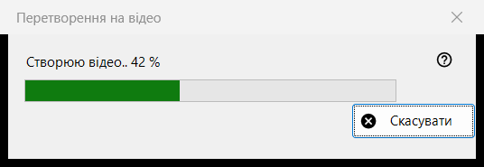
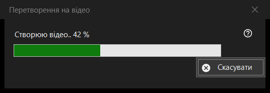

Перетворення на відео
Призначення
Вікно перебігу роботи команди «Перетворити на відео»: воно перетворює анімований GIF, WebP або APNG на MP4 і потім видаляє оригінал. Воно відкривається після підтвердження перетворення, лишається поверх переглядача до кінця роботи й має одну кнопку - «Скасувати».


Порядок дій
- Покажіть анімовану картинку.
- Виберіть «Перетворити на відео..» у меню картинки або натисніть кнопку «Перетворити на відео» на панелі інструментів; обидві є лише доки на екрані анімація, а клавіші для команди немає.
- Прочитайте підтвердження й натисніть «Перетворити».
- Якщо запропонують завантажити FFmpeg, дайте відповідь «Так».
- Стежте за смугою або натисніть «Скасувати».
- Переглядач відкриє новий MP4.
Елементи вікна
Запуск перетворення
Команда пропонується лише для анімації, ніколи для нерухомої картинки чи відео, а для захищеного контейнера й місця, куди поруч із файлом нічого не можна записати, переглядач її відхиляє. Коли робота починається, відтворення зупиняється.
Підтвердження
Текст: оригінал буде перетворено на новий MP4, а оригінал буде видалено безповоротно, повз Кошик. Якщо в анімації є прозорість, додається: «Прозорість буде залито чорним.» Відповідь за умовчанням - «Скасувати». Прапорець «Не питати до закриття програми» діє лише до закриття переглядача й ніде не зберігається.
FFmpeg
Перетворення використовує FFmpeg, якого в програмі немає. Якщо його немає на комп’ютері, один раз запитають про завантаження (розмір указано в питанні; файл береться з сайту проєкту, зберігається локально й є вільною програмою під ліцензією GPL). Відповідь «Ні» зупиняє роботу тут: нічого не створюється й не видаляється.
Вікно перебігу роботи
Підпис «Створюю відео..» з відсотком, під ним смуга. Якщо тривалість анімації невідома, смуга просто ходить туди-сюди, без числа. «Скасувати», клавіша Esc і кнопка закриття означають те саме: вікно лишається ще на мить, доки кодувальник справді не зупиниться, потім закривається, а переглядач повідомляє «Перетворення скасовано». Поки триває робота, переглядачем користуватися не можна.
Що вийде
MP4 у тій самій теці з тим самим ім’ям (якщо ім’я зайняте, додається номер у дужках), із частотою кадрів анімації, від 1 до 50 кадрів на секунду. Файл пишеться під тимчасовим ім’ям і перейменовується, коли готовий. Оригінал видаляється лише після того, як MP4 з’явився під своїм ім’ям і перевірка показала, що в ньому вся анімація. Рядок стану пише «Готово», і переглядач показує відео.
Якщо щось пішло не так
Оригінал лишається, а рядок стану називає причину: «Не вдалося створити відео» з поясненням, «Відео створено, але не вдалося видалити оригінал» або «Відео створено, але його повноту не вдалося перевірити - оригінал збережено». Невдалий запуск не чіпає оригінал, видаляє тимчасовий файл і записує подробиці в журнал.